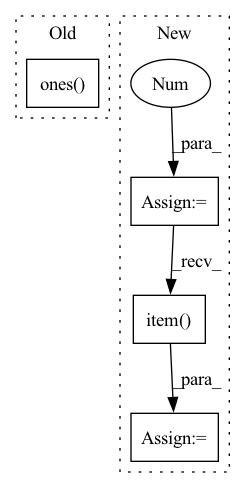

Pattern ID :32903
Before Change
queries_per_block = min(L, 1024//k)
threads = k * queries_per_block
blocks = ((L*k)//threads) + C + 1
query_map = torch.ones( (N, H, blocks), dtype=torch.int32) .cuda() * L
blocks_map = torch.ones((N, H, blocks), dtype=torch.int32).cuda() * -1
_, sorted_group_indices = torch.sort(groups, descending=True, dim=-1)
After Change
else:
// Allocate bookkeeping parameters to facilitate the kernel
with torch.no_grad():
Q_pb = 16
block_counts = (counts + Q_pb - 1) // Q_pb
block_counts = block_counts.int()
block_counts_cumsum = block_counts.view(-1).cumsum(-1).view(N, H, C).int()
indx_maps = torch.ones(
(block_counts.sum(), 4),
device=Q.device,
dtype=torch.int32
)
counts_cumsum = counts.cumsum(-1).int()
total_blocks = block_counts.sum().item()
// Actually perform the dot product
ClusteredSparseDotProduct.dot[device.type](
Q,In pattern: SUPERPATTERN
Frequency: 3
Non-data size: 4
Instances Fragment ID: 95424176
Project Name: idiap/fast-transformers
Commit Name: ac1fd6316f59b56faa3b4e9236810d4e97ed5b15
Time: 2020-11-25
Author: avyas@idiap.ch
File Name: fast_transformers/sparse_product/__init__.py
M Class Name: ClusteredSparseDotProduct
N Class Name: ClusteredSparseDotProduct
M Method Name: forward(7)
N Method Name: forward(7)
M Parent Class: torch.autograd.Function
N Parent Class: torch.autograd.Function
M File Name: fast_transformers/sparse_product/__init__.py
N File Name: fast_transformers/sparse_product/__init__.py
M Start Line: 185
M End Line: 201
N Start Line: 164
N End Line: 208
Before Change
queries_per_block = min(L, 1024)
threads = queries_per_block
blocks = (L//threads) + C + 1
query_map = torch.ones( (N, H, blocks),
dtype=torch.int32,
device=Y.device) * L
blocks_map = torch.ones_like(query_map,
dtype=torch.int32,
device=Y.device) * -1 After Change
// broadcast kernel that takes advantage of clustering
// More information can be found in the cuda file
with torch.no_grad():
threads = 256
G = set_group(C, E)
group_counts = counts.view(N, H, G, -1).sum(-1)
block_counts = (group_counts + threads - 1) // threads
total_blocks = block_counts.sum().item()
indx_maps = torch.ones(
(total_blocks, 5),
device=X.device,
dtype=torch.int32 Fragment ID: 95424174
Project Name: idiap/fast-transformers
Commit Name: 8e4d4469091761280523efe62ffda6277d02ce87
Time: 2020-11-25
Author: avyas@idiap.ch
File Name: fast_transformers/aggregate/__init__.py
M Class Name: AnonimousClass
N Class Name: AnonimousClass
M Method Name: clustered_broadcast(5)
N Method Name: clustered_broadcast(5)
M Parent Class:
N Parent Class:
M File Name: fast_transformers/aggregate/__init__.py
N File Name: fast_transformers/aggregate/__init__.py
M Start Line: 68
M End Line: 94
N Start Line: 72
N End Line: 109
Before Change
if "whamr" in self.hparams.data_folder:
targets = self.hparams.reverb(
targets[0].t(), torch.ones( targets.size(-1))
)
targets = targets.t().unsqueeze(0)
mix = targets.sum(-1)
After Change
if "whamr" in self.hparams.data_folder:
mix = 0
for mic in rirs:
// rir_cat = torch.flip(torch.stack(mic), [1]).unsqueeze(0)
rir_cat = (torch.stack(mic)).unsqueeze(0)
rir_cat = rir_cat.to(self.device)
mix = mix + F.conv1d(
targets.permute(0, 2, 1), rir_cat
)
mix = mix.squeeze(1)
// fix the levels
coef = (
targets.abs().max().item() / mix.abs().max().item()
)
mix = mix * coef
// torchaudio.save("reverbtest.wav", mix.cpu(), 8000)
// torchaudio.save("target.wav", targets[:, :, 0].cpu(), 8000) Fragment ID: 95424175
Project Name: speechbrain/speechbrain
Commit Name: 59bc3bf412dc5c1c2e9baf687ede623cc1c4c588
Time: 2021-03-19
Author: csubakan@gmail.com
File Name: recipes/WSJ0Mix/separation/train.py
M Class Name: Separation
N Class Name: Separation
M Method Name: compute_forward(6)
N Method Name: compute_forward(5)
M Parent Class: sb.Brain
N Parent Class: sb.Brain
M File Name: recipes/WSJ0Mix/separation/train.py
N File Name: recipes/WSJ0Mix/separation/train.py
M Start Line: 50
M End Line: 65
N Start Line: 42
N End Line: 79